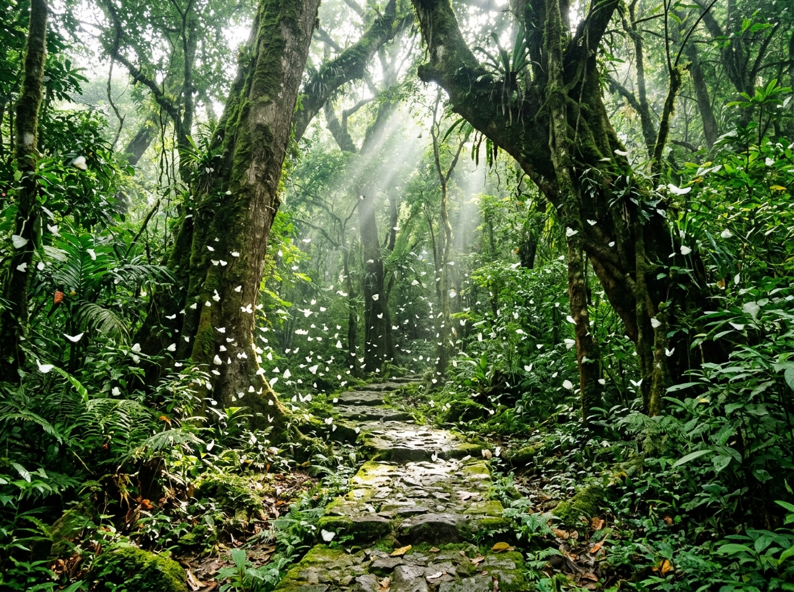
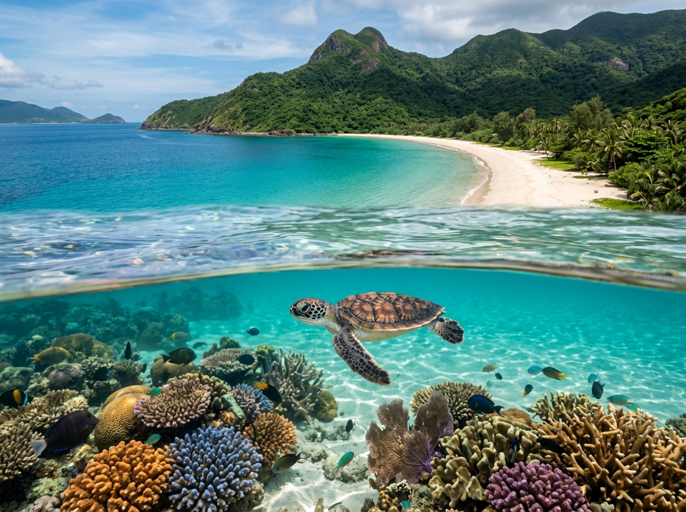
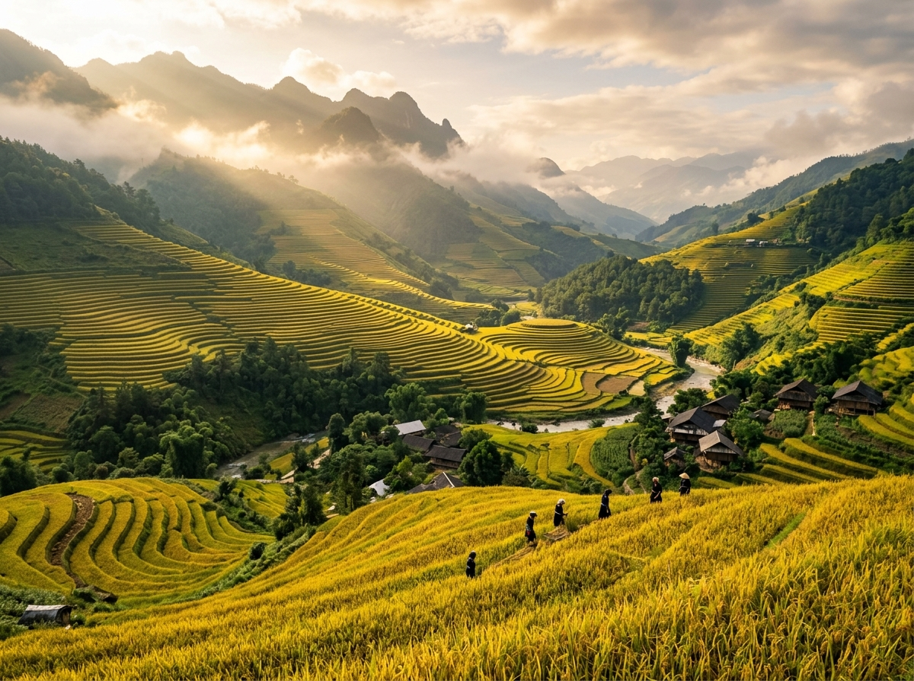

🌱 Xu hướng Du Lịch Sinh Thái 2026 • Đi Nhẹ – Thở Sâu
Đi Nhẹ Để Thấy Rừng Xanh, Thở Sâu Để Chạm Bản Nguyên
Viet Green Travel đồng hành cùng bạn trẻ 20–35 tuổi khám phá thiên nhiên hoang sơ của Việt Nam với triết lý tác động tối thiểu: không rác thải nhựa một lần, tôn trọng văn hóa bản địa và bù đắp dấu chân sinh thái.
Khám Phá Điểm Đến 🍃 Xem Lịch Trình 24h ⏱️
"Chỉ để lại dấu chân, chỉ mang về những kỷ niệm chữa lành."
TUYỆT TÁC THIÊN NHIÊN VIỆT NAM
4 Điểm Đến Sinh Thái Nổi Bật
Mỗi hành trình được tuyển chọn nghiêm ngặt theo tiêu chuẩn bảo tồn đa dạng sinh học và đồng hành cùng người dân địa phương.

Ninh Bình • Rừng Mưa CổVườn Quốc Gia Cúc Phương
Lạc bước giữa thảm rừng nguyên sinh 25.000 ha, ngắm hàng triệu cánh bướm trắng bay dập dờn trong nắng sớm và thăm Trung tâm cứu hộ linh trưởng nguy cấp đầu tiên tại Đông Nam Á.
Xem Lịch Trình Chi Tiết →
Bà Rịa - Vũng Tàu • Hải Đảo XanhQuần Đảo Xanh Côn Đảo
Thức cùng kiểm lâm canh rùa biển đẻ trứng tại Hòn Bảy Cạnh, lặn ngắm san hô không chạm với kính sinh học và khám phá cung đường trekking rừng ngập mặn cổ nguyên sơ.
Xem Lịch Trình Chi Tiết →
Yên Bái • Di Sản Kỳ VĩDi Sản Mù Cang Chải
Chiêm ngưỡng kiệt tác ruộng bậc thang vàng óng mùa lúa chín, cùng phụ nữ người H’Mông dệt thổ cẩm bằng sáp ong và thưởng thức ẩm thực organic ngay tại bản người Thái mến khách.
Xem Lịch Trình Chi Tiết →Vườn Quốc Gia Tràm Chim
Chèo thuyền xuồng ba lá lướt trên cánh đồng hoa sen và súng ma nở tím biếc, lắng nghe bản hòa ca của hơn 230 loài chim thủy sinh và ngắm sếu đầu đỏ quý hiếm dưới ráng chiều Đồng Tháp.
Xem Lịch Trình Chi Tiết →TRIẾT LÝ HÀNH ĐỘNG
Nhóm Giá Trị Bền Vững
Du lịch có trách nhiệm không phải là hạn chế trải nghiệm, mà là nâng tầm mỗi bước chân thành món quà cho Mẹ Thiên Nhiên.
Zero-Waste & Đi Nhẹ
Nói không với đồ nhựa 1 lần. Viet Green trang bị cho mỗi bạn trẻ bình nước inox cách nhiệt, túi cói tái sử dụng và bản đồ số hóa không in ấn giấy.
Tôn Trọng Bản Địa
Toàn bộ hướng dẫn viên, porter và nhà lưu trú đều là người dân địa phương. Chúng tôi bảo tồn nguyên vẹn phong tục tập quán và chia sẻ doanh thu công bằng.
Bù Đắp Dấu Chân Carbon
Mỗi chuyến đi được tính toán lượng phát thải giao thông chính xác và bù đắp thông qua chiến dịch gieo hạt giống bản địa tại các khu rừng phòng hộ đầu nguồn.
Chạm Không Xâm Lấn
Quy mô nhóm nhỏ dưới 10 thành viên, giữ khoảng cách tối thiểu với động vật hoang dã, không tạo tiếng ồn lớn và không để lại bất kỳ vết tích nhân tạo nào.
TRẢI NGHIỆM CHẬM RÃI
Hành Trình Mẫu Một Ngày
"24 Giờ Lắng Nghe Hơi Thở Đại Ngàn Cúc Phương" – một ngày điển hình để sống hòa quyện cùng thiên nhiên, không thiết bị điện tử phiền toái.
-
Sáng Sớm
Khởi Đầu Đón Bình Minh Sương & Thiền Thở Giữa Đại Ngàn
Thức dậy tại bungalow gỗ mộc, hít thở bầu không khí rừng mưa mát lành với nồng độ ion âm cao. Nhâm nhi tách trà thảo mộc Cúc Phương ấm nồng và khởi động ngày mới cùng bài tập thở sâu.
-
Buổi Sáng
Khám Phá Trekking Đi Nhẹ – Theo Dấu Mùa Bướm Nở & Cây Cổ Thụ
Cùng chuyên gia kiểm lâm đi bộ 4km đường mòn rêu xanh, ngắm dải bướm trắng bay phủ khắp lối đi, tìm hiểu các loài dây leo ký sinh hàng trăm năm và dấu vết sinh học của linh trưởng quý hiếm.
-
Buổi Trưa
Ẩm Thực Bữa Trưa Farm-to-Table Thuần Tự Nhiên
Thưởng thức bữa trưa dã ngoại bày trên lá chuối tươi: cơm lam nướng than, rau sắng hái tại vườn hữu cơ địa phương, nấm rừng xào hạt điều và canh chua trái sấu giải nhiệt thanh tao.
-
Buổi Chiều
Bảo Tồn Thăm Trung Tâm Cứu Hộ & Gieo Mầm Cây Xanh
Trực tiếp quan sát voọc mông trắng được chăm sóc phục hồi; tự tay ươm mầm cây con trong bầu đất xơ dừa tái chế, gắn thẻ tên của bạn để nhân viên rừng chăm sóc trồng thành cây cổ thụ.
-
Hoàng Hôn
Hoàng Hôn Chèo Thuyền Yên Lặng Ven Hồ Mạc Tĩnh Lặng
Lướt nhẹ mái chèo gỗ trên mặt hồ gương soi bóng núi đá vôi, ngắm ráng chiều vàng óng nhuộm sắc mây trời trong bầu không khí tĩnh mịch, chỉ có tiếng gió lùa qua kẽ lá.
-
Ban Đêm
Kết Nối Trò Chuyện Quanh Bếp Lửa Mộc & Ngắm Ngân Hà
Quây quần cùng các bạn đồng hành lắng nghe chuyện nghề của người gác rừng, thưởng thức ngô nướng than hồng và ngửa cổ ngắm dải ngân hà lấp lánh không vướng chút ô nhiễm ánh sáng đô thị.